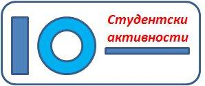
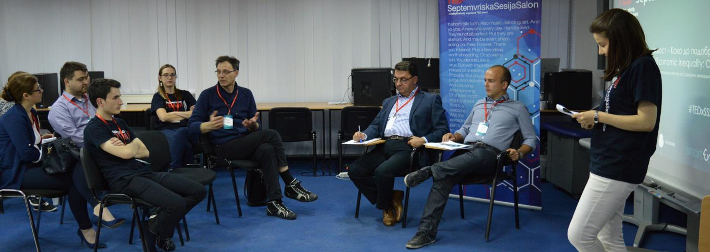
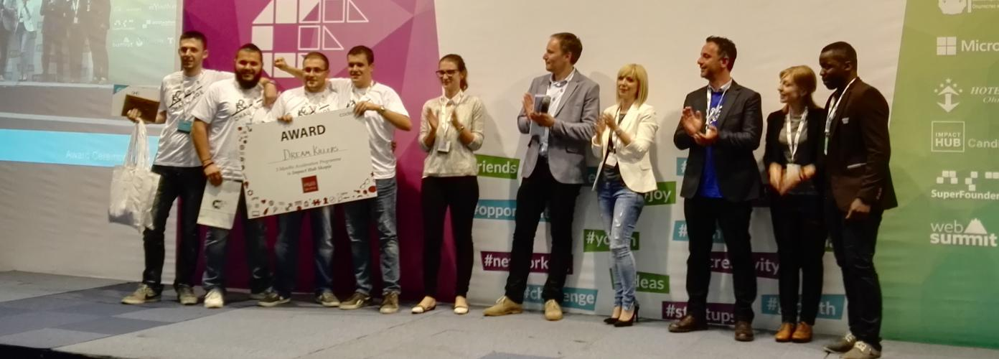
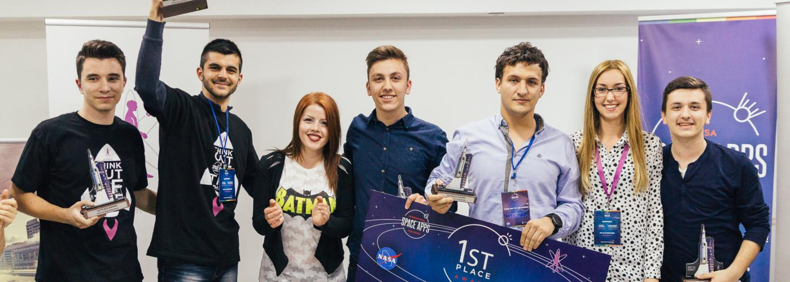
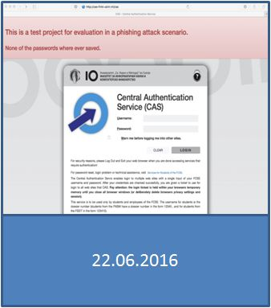
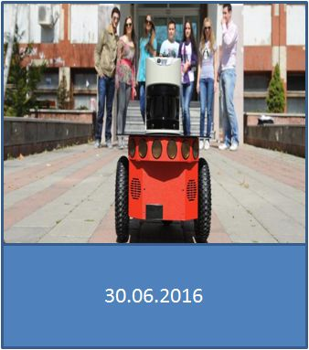

"Да изградиме нова ИТ иднина"
СТУДЕНТСКИ АКТИВНОСТИ

TEDx настан на ФИНКИ
Студенти од ФИНКИ победници на Codefest 2016
TEDx настан на ФИНКИ
"Дали технологијата може да ги реши најголемите човекови предизвици?"
Студенти од ФИНКИ победници на Codefest 2016
освоено прво место на овогодинешниот 32-часовен маратон во програмирање Codefest Marathon под мотото "Challenge Your Limits"
Студенти на ФИНКИ победници на NASA Space App Challenge
 НАСТАНИ



Безбедносно тестирање на ФИНКИ
Почитувани студенти, во изминатите неколку дена беше изведена безбедносна проверка за свеста и отпорноста на студентите на ФИНКИ за phishing напади (или таканаречено мрежно рибарење).
Отворени денови на ФИНКИ
На 07 мај 2016 година (сабота) со почеток во 11 часот, Факултетот за информатички науки и компјутерско инженерство организира Отворен ден, на коj идните студенти ќе имаат уште една можност директно да се запознаат со можностите за студирање на Факултетот.
Ден на Европа
По повод денот на Европа, 9ти мај, Европската унија на институти за култура (EUNIC), со поддршка на Секретаријатот за европски прашања и Делегацијата на ЕУ, организира настан "Младите и мобилноста", во понеделник, 9ти ма,ј 2016 год., од 11 до 14h часот во EU-MK инфо центарот (Плоштад Македонија).
ЛЕТНА ШКОЛА ЗА ПРОГРАМИРАЊЕ


Стефан Куновски и Димитри Дојчиновски
© ФИНКИ 2016
© ФИНКИ 2016